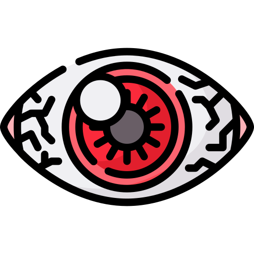

Okosképernyő hatása az egészségünkre
Számítógépes látás szindróma
A számítógépes látás szindróma egy gyűjtőfogalom az olyan tünetekre, amiket a sok okoseszközhasználat vált ki.
A gyerekeknél ugyanúgy kialakulhat, mint a felnőttek esetében.
Kiszáradás
Amikor okoseszközök képernyőit nézzük, feleannyit pislogunk, mint egyébként, amitől a szemünk hamar kiszáradhat.
Tünetek:
- Vörös szem
- Homályos látás
- Kettős látás
- Égető érzés
- Viszketés
- Fáradt szemek
- Szemmegerőltetés
- Könnyezés
Hosszútávú hatása:
- Tartós szemmegerőltetés
- Fejfájás
- Stressz
Megoldás:
- Szemcsepp/ Műkönny (lehetőleg tartósíytószermentes)
- Párásító az irodába

Fényérzékenység
A legtöbben tudják, hogy az ultraibolya (UV) kék fény káros hatással van a szemre (és a bőrre).A mesterséges LED képernyők ehhez hasonló ibolyakék fénnyel rendelkeznek, ami szintén káros hatású, ha akadály nélkül hatol át a szem védőrétegén egészen hátra a retináig.
Megoldás:
- Kékfény védő
- Matt képernyővédő (éles fény és villogások ellen)
Fókuszálási nehézség
A folyamatos képernyőre fókuszálás megerőlteti a szemünket, főleg, ha közelről és rossz helyzetből nézzük azt.Minimum egy karnyi távolságra érdemes ülni a számítógéptől, egy kicsit lefelé nézve rá.
Megoldás:
- 20-20-20
- 20 percenként
- 20 másodpercig fókuszáljunk egy
- 20 lábra (kb. 6m) lévő tárgyra
- Tartsunk gyakori pihenőket
- Pislogjunk sokat